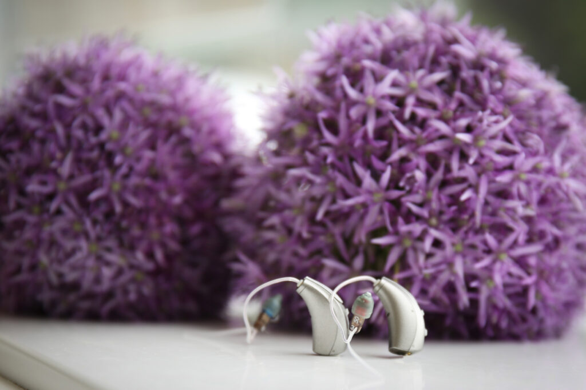

The Gold Standard
What is microsuction?
Microsuction is the safest and most effective method of ear wax removal available today. Unlike traditional ear syringing, which uses water pressure, microsuction uses a gentle medical-grade suction device to carefully remove wax from the ear canal.
Our audiologists use a video otoscope — a tiny camera that provides a magnified, real-time view of your ear canal — ensuring precision and safety throughout the procedure. You can even see the results on screen yourself.
All treatments follow the British Society of Audiology (BSA) guidance, and are carried out by fully qualified, HCPC registered hearing professionals.
Pricing
Clear, simple pricing
No hidden fees, no surprises. Our pricing covers everything you need for safe, professional ear wax removal.
Standard
In-clinic microsuction ear wax removal
- Covers 1 or 2 ears
- 20 minute appointment
- Video otoscope assessment
- HCPC registered audiologist
Home Visit
The same professional service at your home
- Covers 1 or 2 ears
- Full microsuction service
- Ideal for less mobile patients
- Video otoscope assessment
Consultation
Charge if no wax is present
- Full otoscope examination
- Professional advice
- Referral if needed
- Peace of mind
What to Expect
Your appointment, step by step
From preparation to aftercare, here’s exactly what happens when you visit us for ear wax removal.
Preparation
Use olive oil drops (we recommend Earol spray) for 3–4 days before your appointment to soften the wax and make removal easier.
Assessment
Your audiologist will examine your ear canal using a video otoscope, giving a clear, magnified view of the wax and eardrum.
Removal
Using gentle microsuction, we safely remove the wax under direct vision. The process is quick, precise and comfortable.
Aftercare
We provide personalised aftercare advice and follow-up recommendations to help keep your ears healthy going forward.
Frequently Asked Questions
Common questions about ear wax removal
No, microsuction is not painful. Most patients describe it as a gentle tickling sensation with a slight noise from the suction. It is far more comfortable than traditional ear syringing. If at any point you feel discomfort, our audiologist will stop immediately and adjust the approach.
A standard ear wax removal appointment takes approximately 20 minutes. This includes the initial video otoscope assessment, the removal itself, and aftercare advice. We never rush — if your appointment requires a little extra time, we are happy to take it.
We recommend using olive oil drops or Earol spray for 3–4 days before your appointment. This helps soften the wax and makes removal quicker and more comfortable. However, if you haven’t been able to use drops, please still attend your appointment — we can usually still help.
Yes, absolutely. Our standard £85 appointment covers both ears. We will assess and treat both sides during the same visit, so there is no need to book separate appointments.
If we examine your ears and find no wax present, a reduced consultation fee of £30 applies. You will still receive a full video otoscope examination and professional advice about your ear health, and we can discuss any other hearing concerns you may have.
We treat adults and older children. For younger children, we assess on a case-by-case basis and will always prioritise the patient’s comfort and safety. Please contact us if you have any questions about suitability for a younger patient.
We kindly ask for at least 24 hours’ notice if you need to cancel or reschedule your appointment. This allows us to offer the slot to another patient. Late cancellations or missed appointments may be subject to a charge.